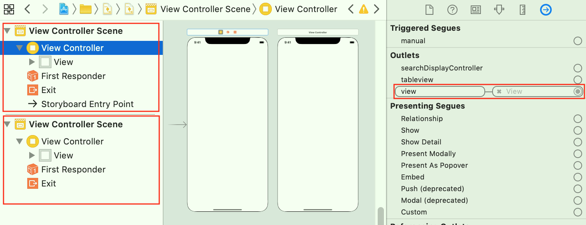
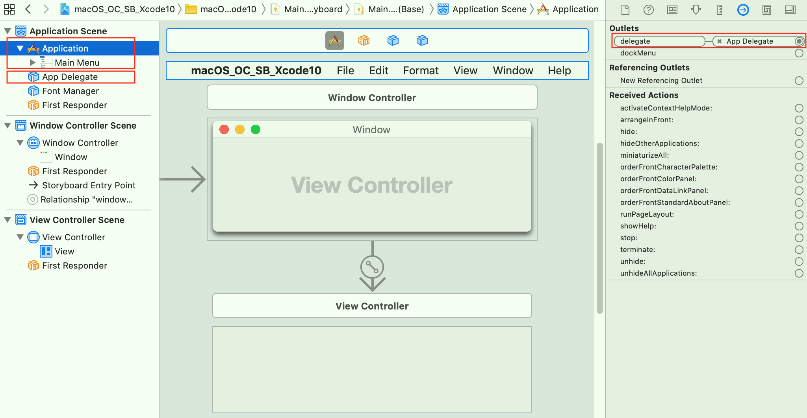
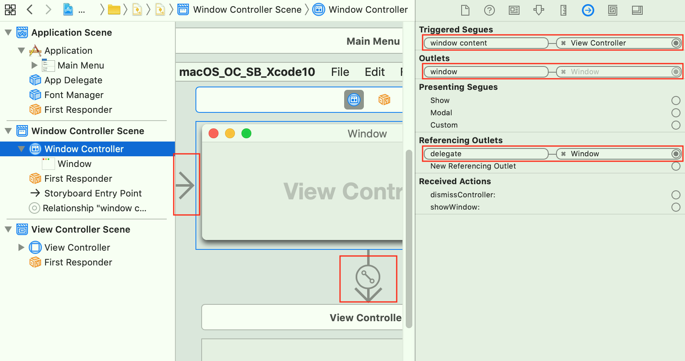
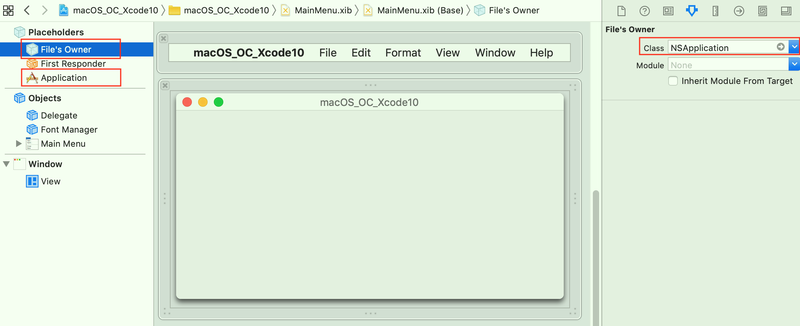
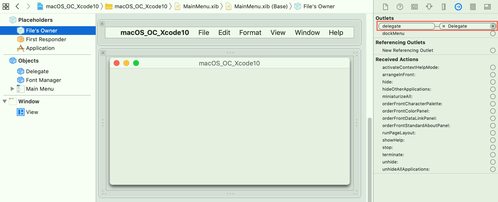
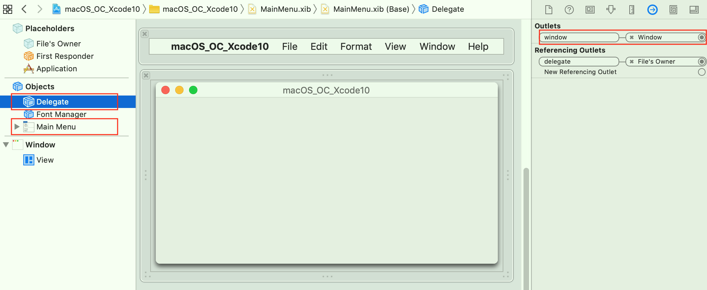
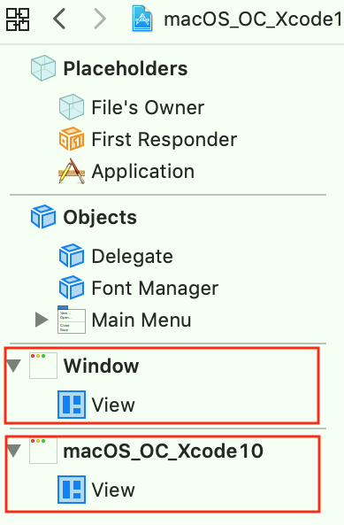
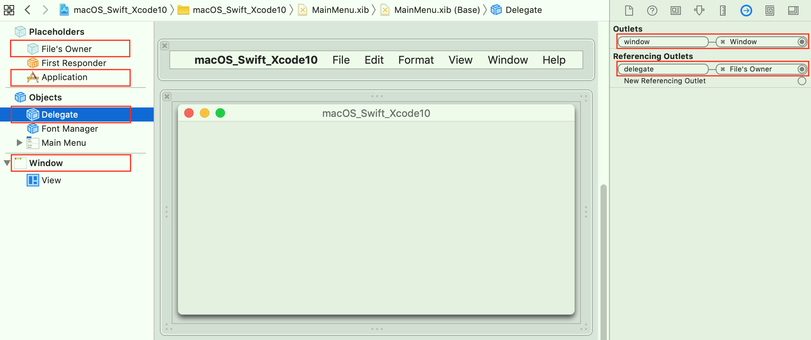

一、iOS应用启动逻辑
-
1、OC版本
-
1）执行main.m文件中的
main函数（程序入口）；#import <UIKit/UIKit.h> #import "AppDelegate.h" int main(int argc, char * argv[]) { @autoreleasepool { return UIApplicationMain(argc, argv, nil, NSStringFromClass([AppDelegate class])); } }UIApplicationMain(int argc, char *argv[], NSString *principalClassName, NSString *delegateClassName)是启动应用的函数，有四个参数argc、*argv[]、principalClassName、delegateClassName；principalClassName：UIApplication（或其子类）的类名，之后会自动生成该类型的对象；若设置为nil，则使用UIApplication类型，不使用其子类型；delegateClassName：UIApplicationDelegate类型的类名，之后会自动生成该类型的对象，UIApplication（或其子类）类型的对象的代理；- 方法参数具体含义：参考函数说明文档；
UIApplicationMain：Creates the application object and the application delegate and sets up the event cycle.
-
2）读取
Info.plist，判断有没有配置UIMainStoryboard（Main storyboard file base name）使用SB进行初始化window；-
若配置了UIMainStoryboard，则加载SB，并且把“配置成
Initial View Controller的View Controller”，设置为UIApplication（或其子类）类型的对象的代理的window属性的rootViewController； -
若配置了UIMainStoryboard，但是
UIApplication（或其子类）类型的对象的代理没有window属性，则报警告The app delegate must implement the window property if it wants to use a main storyboard file.；#import <UIKit/UIKit.h> @interface AppDelegate : UIResponder <UIApplicationDelegate> @property (strong, nonatomic) UIWindow *window; @end
-
-
3）调用
UIApplication（或其子类）类型的对象的代理的- (BOOL)application:(UIApplication *)application didFinishLaunchingWithOptions:(NSDictionary *)launchOptions方法；- 没有配置
UIMainStoryboard使用SB进行初始化window，或者需要重新配置window，可以在该方法中进行操作；
- 没有配置
-
-
2、Swift版本
-
1）由于Swift没有main.m文件，使用
@UIApplicationMain修饰UIApplication（或其子类）类型的对象的代理，表示执行UIApplicationMain函数启动应用；import UIKit @UIApplicationMain class AppDelegate: UIResponder, UIApplicationDelegate { var window: UIWindow? func application(_ application: UIApplication, didFinishLaunchingWithOptions launchOptions: [UIApplication.LaunchOptionsKey: Any]?) -> Bool { // Override point for customization after application launch. return true } } -
2）之后的逻辑和OC版本的一样；
-
二、macOS应用启动逻辑
-
1、SB：OC版本
-
1）执行main.m文件中的main函数（程序入口）；
#import <Cocoa/Cocoa.h> int main(int argc, const char * argv[]) { return NSApplicationMain(argc, argv); }- 与iOS的UIApplicationMain函数相比，少了两个参数
principalClassName（指定UIApplication（或其子类）类型）、delegateClassName（指定UIApplication（或其子类）类型的对象的代理）； - 其中
principalClassName（指定UIApplication（或其子类）类型）由Info.plist配置指定了NSPrincipalClass（Principal class，值为NSApplication）；
- 与iOS的UIApplicationMain函数相比，少了两个参数
-
2）读取
Info.plist的NSPrincipalClass（Principal class，值为NSApplication），创建自动生成该类型的对象，NSApplication（或其子类）类型； -
3）读取
Info.plist，判断有没有配置NSMainStoryboardFile（Main storyboard file base name）使用SB进行初始化一系列相关的对象；
-
a. SB默认创建三个Scene：
Application Scene、Window Controller Scene、View Controller Scene； -
b. Application Scene：
-
只能有唯一个；
-
Application内包含着
Main Menu； -
Main Menu、App Delegate（Class被配置成AppDelegate（实现了NSApplicationDelegate协议））、Font Manager（Class被配置成NSFontManager）都是Object，加载XIB时会创建，并关联属性、事件；#import <Cocoa/Cocoa.h> @interface AppDelegate : NSObject <NSApplicationDelegate> @end -
Application的
delegate属性关联App Delegate；
-
-
c. Window Controller Scene
- 可以有多个；
- 拖入Window Controller控件，会自动拖入View Controller控件；Window Controller Scene关联View Controller Scene；
- Window控件内部中
没有一个View控件；（XIB的有）
-
d. View Controller Scene
- 可以有多个；
- 可以单独拖入View Controller控件；
-
e. 使用SB创建的macOS项目，
Window由Window Controller进行管理的；
- Window Controller的
window属性关联Window（不可以取消）； - Window Controller的
contentViewController属性关联View Controller； - Window的
delegate属性关联Window Controller；
- Window Controller的
-
-
4）若配置了
NSMainStoryboardFile，则加载SB，并且准备展示“配置成Initial Controller的Window Controller”； -
5）调用
App Delegate（Class被配置成AppDelegate（实现了NSApplicationDelegate协议））的- (void)applicationDidFinishLaunching:(NSNotification *)aNotification方法；#import "AppDelegate.h" @interface AppDelegate () @end @implementation AppDelegate - (void)applicationDidFinishLaunching:(NSNotification *)aNotification { // Insert code here to initialize your application } - (void)applicationWillTerminate:(NSNotification *)aNotification { // Insert code here to tear down your application } @end- 没有配置
NSMainStoryboardFile使用SB进行初始化，或者需要重新配置初始化，可以在该方法中进行操作；
- 没有配置
-
-
2、SB：Swift版本
-
1）由于Swift没有main.m文件，使用
@NSApplicationMain修饰NSApplication（或其子类）类型的对象的代理，表示执行NSApplicationMain函数启动应用；import Cocoa @NSApplicationMain class AppDelegate: NSObject, NSApplicationDelegate { func applicationDidFinishLaunching(_ aNotification: Notification) { // Insert code here to initialize your application } func applicationWillTerminate(_ aNotification: Notification) { // Insert code here to tear down your application } } -
2）但由于
NSApplicationMain函数没有principalClassName、delegateClassName参数，所以该函数仅仅是启动应用，还需要在Info.Plist中配置NSPrincipalClass、NSMainStoryboardFile（并添加App Delegate Object）； -
3）之后的逻辑和OC版本的一样，SB中的配置（Scene、属性、方法关联等）和OC版本的一样；
-
-
3、XIB：OC版本
-
1）与“SB：OC版本”的类似，只是第3步有所差异；
Info.plist的NSMainStoryboardFile换成了NSMainNibFile（Main nib file base name），使用XIB进行初始化一系列相关的对象；
-
iOS的XIB的Placeholders默认有
File's Owner、First Responder两项，macOS的XIB的Placeholders默认有File's Owner、First Responder、Application三项； -
First Responder的Class被配置成NSApplication，其delegate属性关联Delegate； -
Main Menu、Delegate（Class被配置成AppDelegate（实现了NSApplicationDelegate协议））、Font Manager（Class被配置成NSFontManager）都是Object，加载XIB时会创建，并关联属性、事件； -
使用XIB创建的macOS项目，
Window由Delegate（Class被配置成AppDelegate（实现了NSApplicationDelegate协议））`进行管理的；
- Delegate的
window属性（人为添加的，不是NSApplicationDelegate自带的，可以去掉）关联Window； - XIB中的
Outlets是指当前对象的某个属性关联了某个对象，Referencing Outlets是指当前对象被关联到某个对象的某个属性上了；
- Delegate的
-
若在一个XIB中配置了多个window，则会同时运行多个window；这说明程序是找XIB中的window运行的，
window是独立的； -
Window控件内部中
有一个View控件，且不删除不掉；
-
-
2）AppDelegate的相关代码
#import <Cocoa/Cocoa.h> @interface AppDelegate : NSObject <NSApplicationDelegate> @end#import "AppDelegate.h" @interface AppDelegate () @property (weak) IBOutlet NSWindow *window; @end @implementation AppDelegate - (void)applicationDidFinishLaunching:(NSNotification *)aNotification { // Insert code here to initialize your application } - (void)applicationWillTerminate:(NSNotification *)aNotification { // Insert code here to tear down your application } @end
-
-
4、XIB：Swift版本
-
1）与“SB：Swift版本”的类似，具体差异参考“XIB：OC版本”与“SB：OC版本”（
@NSApplicationMain、NSMainNibFile）；import Cocoa @NSApplicationMain class AppDelegate: NSObject, NSApplicationDelegate { @IBOutlet weak var window: NSWindow! func applicationDidFinishLaunching(_ aNotification: Notification) { // Insert code here to initialize your application } func applicationWillTerminate(_ aNotification: Notification) { // Insert code here to tear down your application } }
-
三、代码创建macOS项目
-
1、不完全版本
- 方式：删除SB文件中的
View Controller Scene和Window Controller Scene，保留Application Scene，或者删除XIB文件中的Window，保留Objects； - 这样可以保留
Application对象、AppDelegate对象、MainMenu对象，只需要在applicationDidFinishLaunching方法中手动创建展示window相关对象即可；
- 方式：删除SB文件中的
-
2、完全版本
-
方式：删除SB或XIB，以及Info.plist的相关配置项（
NSMainStoryboardFile或NSMainNibFile）； -
由于删除了SB或XIB，所以除了在
applicationDidFinishLaunching方法中手动创建展示window相关对象外，还需要在此之前手动创建AppDelegate对象、MainMenu对象，而Application则可以通过单例方法获取到； -
注意：要设置
Application对象的代理为AppDelegate对象，否则相关代理方法不会被调用；也可以不创建MainMenu对象，只是程序启动后没有菜单栏而已；int main(int argc, const char * argv[]) { // 创建AppDelegate，并设置为代理 AppDelegate *delegate = [[AppDelegate alloc] init]; NSApplication.sharedApplication.delegate = delegate; return NSApplicationMain(argc, argv); }- (void)applicationDidFinishLaunching:(NSNotification *)aNotification { // 窗口有标题、关闭、缩小、放大按钮 NSUInteger style = NSWindowStyleMaskTitled | NSWindowStyleMaskClosable | NSWindowStyleMaskMiniaturizable | NSWindowStyleMaskResizable; CGRect rect = NSMakeRect(0, 0, 200, 200); NSWindow *window = [[NSWindow alloc] initWithContentRect:rect styleMask:style backing:NSBackingStoreBuffered defer:YES]; window.title = @"Test"; [window makeKeyAndOrderFront:nil]; } -
Swift版本默认没有main文件，此时需要新建
main.swift，并添加以下内容；import Cocoa // 创建AppDelegate，并设置为代理 let delegate = AppDelegate() NSApplication.shared.delegate = delegate _ = NSApplicationMain(CommandLine.argc, CommandLine.unsafeArgv) // 或 NSApplication.shared.run()
-